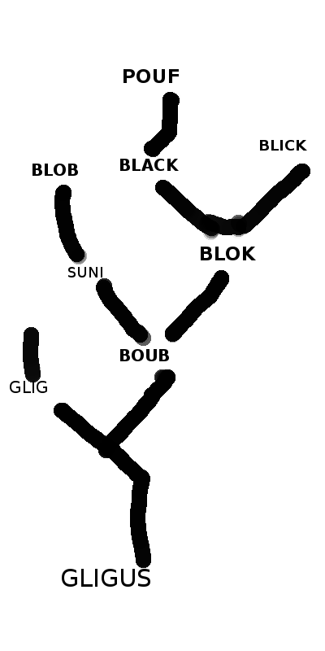

Gligs are a group of animals that live throughout the solar system and beyond. They have a complex family tree.

Gligs can have many legs. Gligs with three legs are not Gligs, they are called Glags. Boubs have 30 legs, and are ancestors of Gligs.
Gligs live in many countries on Jupiter:
Gligs have fought many world wars, ten world wars. They won each time. They helped Ouvagne in their war against Pluto.
A glig is like a human child (although they are squishier and they cannot walk yet).
They live in every continent, every ocean , on every moon, and on every leaf.
There are hundreds of thousands of gligs in the world. A glig cannot eat any more gligs.
They do not sleep because they need the sunlight to feed.
They have no eyes on their noses. Their eyes are on the top of their heads. Their noses are not used for vision.
The tail is a bit long but not quite as long as their body. Gligs have spots that are orange in color.
To reproduce 1 glig jumps in the belly of another and doubles! It is funny!